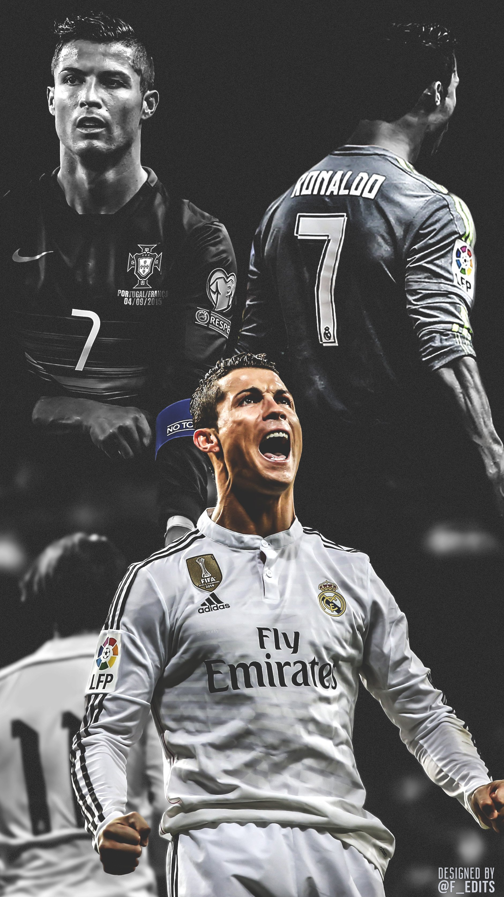
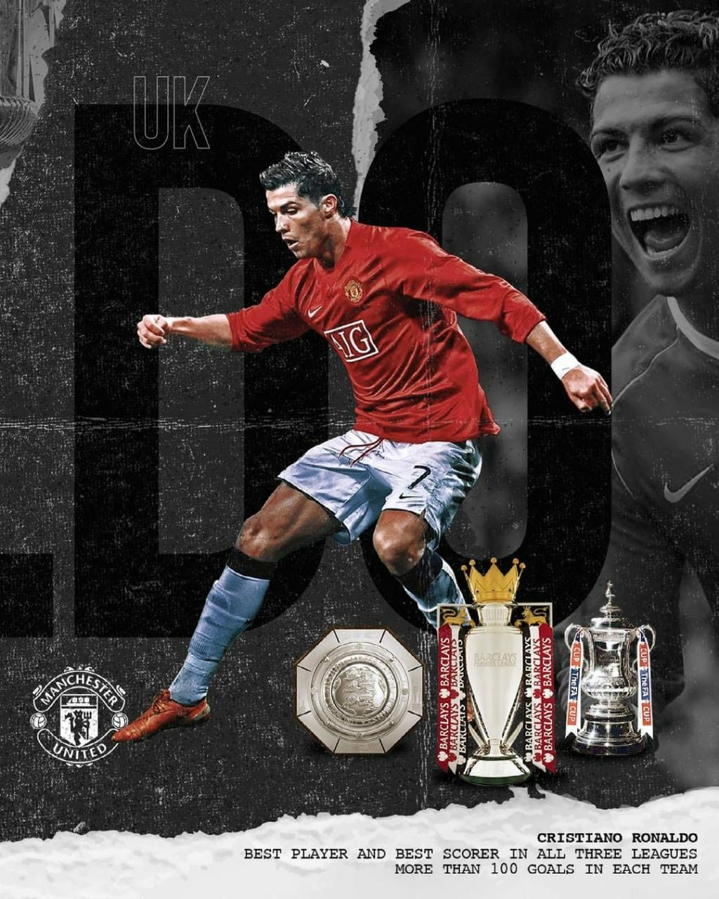
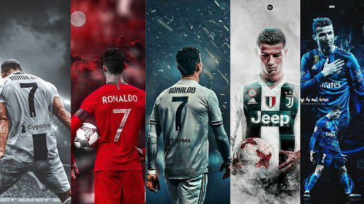

Why Cristiano Ronaldo is My Favorite Soccer Player
Introduction
Cristiano Ronaldo is my favorite soccer player for many reasons. He has achieved great success in his career and has been a role model for many aspiring athletes. I started playing soccer because of Ronaldo. I liked how he played and dribbled throw player left and right.
Success and Achievements

Ronaldo has won numerous awards and titles throughout his career, including multiple FIFA Ballon d'Or awards, UEFA Champions League titles, and domestic league titles in England, Spain, and Italy.
Goal-Scoring Record
Ronaldo is also known for his incredible goal-scoring record. He has scored over 700 goals in his career and continues to be a prolific goal scorer even in his later years.